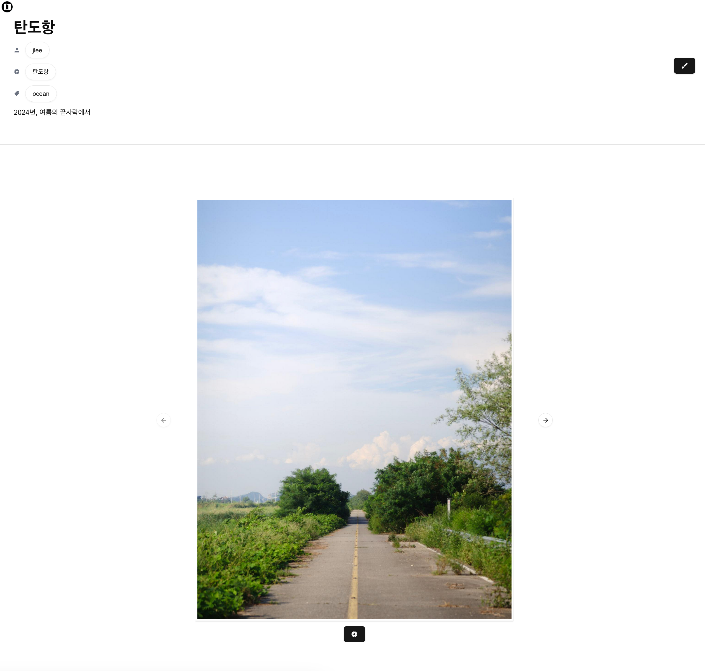

Photomap 개발 기록
작년 여름부터, photomap이라는 웹 플랫폼을 만들고 있다.
쉽게 말하면, 사진가들이 자신들이 찍은 사진을 지도 기반으로 공유할 수 있는 플랫폼이다. 항상 사진을 찍을 때마다 어디로가서 어떤 사진을 찍을 지 고민이 많았는데, 사진가들끼리 지도 기반으로 공유할 수 있는 플랫폼이 있으면 좋겠다는 생각을 해서 개인 프로젝트로 만들게 되었다.
현재 aws lightsail을 사용해서 배포한 상태인데, free tier가 끝나가서 어떻게 할 지 고민 중이다. 
메인 지도에 있는 사진을 클릭하면, 사진이 포함된 글의 상세 페이지로 이동한다.
그리고 글을 새로 생성하기 위해서는 지도를 클릭하면 된다.
{kind=link}
{kind=link}
이 글에서는 간단하게 photomap의 개발 기록을 남기려고 한다.
1. 프로젝트 구조
아주 간단하게 프로젝트 구조를 정리해보았다. 프론트와 백엔드 서버 모두 하나의 EC2 인스턴스에서 실행되고, 이미지 업로드/다운로드는 S3를 사용한다.
{kind=link}
2. 백엔드
Github: photomap-backend
백엔드로는 Django를 사용했다.
기능을 구현하는 데 그치지 않고, 시스템 구조나 프레임워크를 선택할 때마다 항상 “이게 최선일까?”라는 질문을 던지며 진행했다. 각 선택지의 장단점을 분석하고, 배운 시스템 지식을 바탕으로 최적의 방식을 선택하려고 노력했다. 특히 배포를 한 이후에는 서버 성능 최적화에 많은 시간을 쏟았는데,병목이 발생할 수 있는 부분을 2가지로 생각하고 최적화를 진행했다.
2-1. 사진 업로드/압축 파이프라인
사용자가 사진을 업로드하면, 백엔드에서 해당 사진을 프리뷰/일반/확대 버전의 3가지 크기로 압축하고 S3에 저장해야 했다. 초기에는 이 작업이 동기적으로 처리되어 API 응답 시간이 길어지는 문제가 있었고, 유저가 무한정 대기하는 상황이 발생할 수 있었습니다.
이를 해결하기 위해 Celery와 Redis를 도입해 비동기 처리 방식으로 전환했고, 업로드 상태는 SSE(Server-Sent Events)를 통해 실시간으로 클라이언트에 전달되도록 구성했고, 덕분에 사용자 경험과 서버 응답성이 모두 개선되었다.
2-2. 메인 지도 api
플랫폼의 특성상, 메인 페이지에 있는 세계지도에 유저들의 사진 위치 마커를 요청하는 api의 호출이 가장 많을 것으로 판단하고 최적화를 진행했다.
기존에는 단순히 모든 사진의 마커를 반환하는 방식으로 api를 구성했지만 이 방식으로는 사진이 늘어남에 따라 유저의 브라우저와 서버 모두 너무 부담이 커질 것으로 생각했ek. 그래서 총 2가지 방법으로 변경을 했는데,
- 세계 지도를 grid로 나누고, grid 마다 최대 일정 개수까지의 마커만을 반환
- grid 단위로 redis로 캐시를 하고, DB도 spatial index를 가지면 grid방식과 잘 어울릴 것 같아서 PostgresSQL의 PostGIS 확장을 사용해서 쿼리 성능을 향상시켰다.
그래서 메인 지도 api의 변경 전과 후를 비교 테스트를 했는데,
개선 전 개선 후
locust라는 api 로드 테스트툴을 사용해서, 서버에 dummy 사진 data 500개를 생성해두고, 20개의 user로 load test를 진행했다. 로드가 최고에 도달했을때 이전 방식에서는 평균적으로 9000ms 정도에서 평균 2000ms 로 매우 성능이 향상됬고, rps, 초당 request도 2 → 10으로 매우 향상될 수 있었다.
.png){kind=link}
.png){kind=link}
3. 프론트엔드
Github: photomap-frontend
프론트엔드는 next.js를 사용했다.
그리고 ui 제작을 위해 shadcn/ui와 tailwindcss를 사용했다.
shadcn/ui는 react 컴포넌트 라이브러리로, tailwindcss를 기반으로 하여 빠르게 UI를 구성할 수 있도록 도와준다. shadcn/ui는 컴포넌트의 스타일을 tailwindcss로 작성할 수 있어, 매우 유연하게 커스터마이징할 수 있다. 또한, shadcn/ui는 컴포넌트의 상태를 관리하기 위한 훅을 제공하여, 상태 관리가 용이하다.
그리고 지도는 openstreemap을 사용했다.
4. 배포
Github: photomap-deploy
배포는 aws lightsail을 사용했다.
그리고 docker를 사용하여 백엔드와 프론트엔드를 컨테이너화하고, nginx를 리버스 프록시로 사용하여 두 서비스를 연결했다.
Free tier가 끝나면, 월 13달러정도의 비용이 발생하는데, 현재로서는 이 정도 비용은 감당할 수 있을 것 같다.
5. 향후 계획
몇가지 생각하고 있는게 있는데,
- oauth2를 사용한 로그인 기능 추가
- 메인페이지에 지도와 마커만 보여주는게 아니라, 현재 보여주고 있는 마커들의 사진들을 인스타처럼 모아서 보여주기
- 위치기반으로 현재 내 주변의 사진들을 보여주는 기능 추가
- 모바일 최적화
- 프론트엔드 코드 리팩토링